Zeek
-Each log output consists of multiple fields, and each field holds a different part of the traffic data. Correlation is done through a unique value called "UID". The "UID" represents the unique identifier assigned to each session.
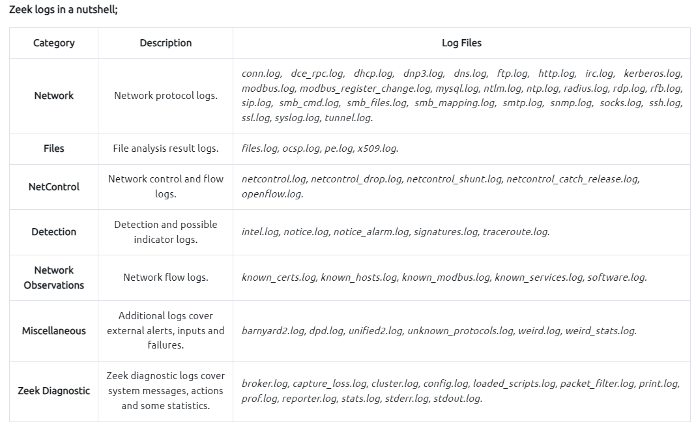
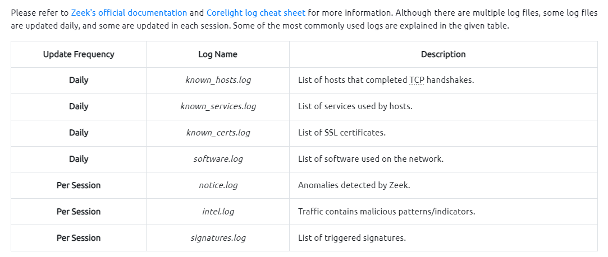
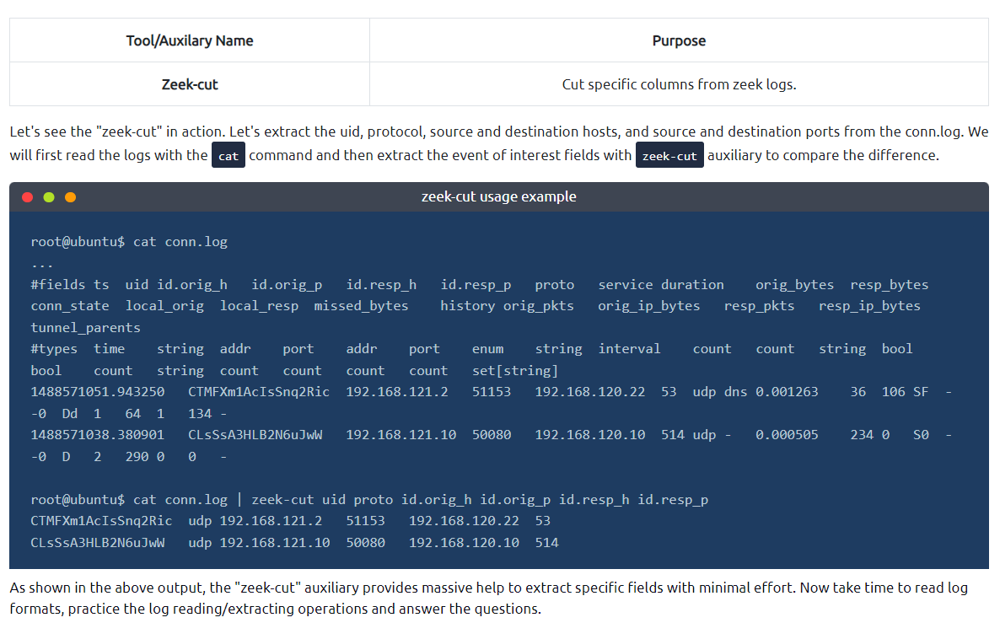
Zeek Scripts
Zeek has its own event-driven scripting language, which is as powerful as high-level languages and allows us to investigate and correlate the detected events. Since it is as capable as high-level programming languages, you will need to spend time on Zeek scripting language in order to become proficient. In this room, we will cover the basics of Zeek scripting to help you understand, modify and create basic scripts. Note that scripts can be used to apply a policy and in this case, they are called policy scripts.
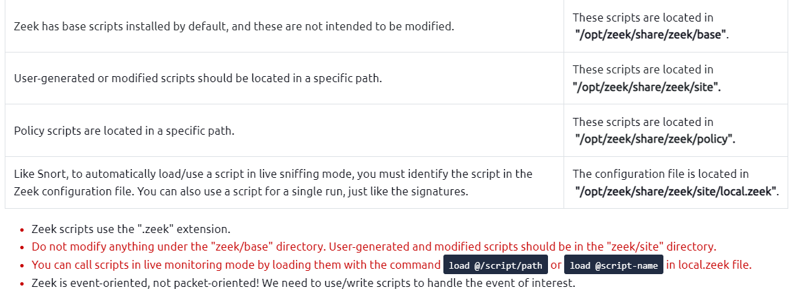
Scripts contain operators, types, attributes, declarations and statements, and directives. Let's look at a simple example event called "zeek_init" and "zeek_done". These events work once the Zeek process starts and stops. Note that these events don't have parameters, and some events will require parameters.
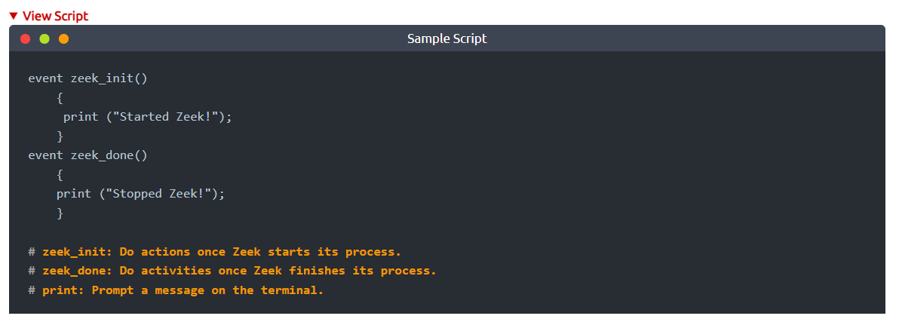
Let's print the packet data to the terminal and see the raw data. In this script, we are requesting details of a connection and extracting them without any filtering or sorting of the data. To accomplish this, we are using the "new_connection" event. This event is automatically generated for each new connection. This script provides bulk information on the terminal. We need to get familiar with Zeek's data structure to reduce the amount of information and focus on the event of interest. To do so, we need to investigate the bulk data.
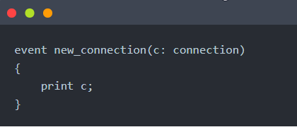
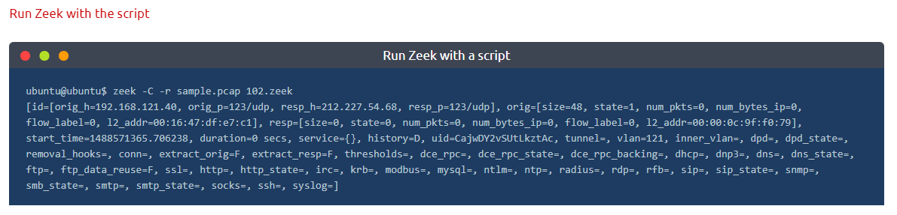
The above terminal provides bulk data for each connection. This style is not the best usage, and in real life, we will need to filter the information for specific purposes. If you look closely at the output, you can see an ID and field value for each part. To filter the event of interest, we will use the primary tag (in this case, it is c --comes from "c: connection"--), id value (id=), and field name. You should notice that the fields are the same as the fields in the log files.
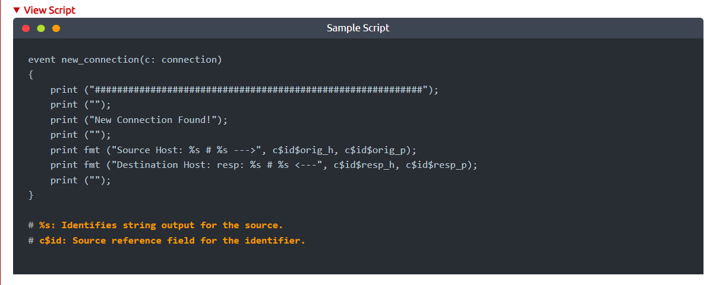
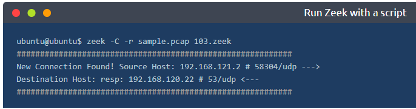
The above output shows that we successfully extract specific information from the events. Remember that this script extracts the event of interest (in this example, a new connection), and we still have logs in the working directory. We can always modify and optimise the scripts at any time.
Scripts 201 | Use Scripts and Signatures Together
Up to here, we covered the basics of Zeek scripts.
Now it is time to use scripts collaboratively with other scripts and signatures to get one step closer to event correlation. Zeek scripts can refer to signatures and other Zeek scripts as well. This flexibility provides a massive advantage in event correlation.Let's demonstrate this concept with an example. We will create a script that detects if our previously created "
ftp-admin
" rule has a hit.
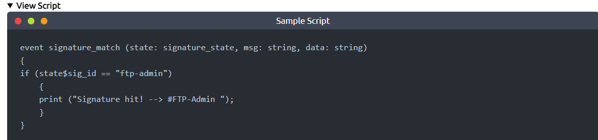
This basic script quickly checks if there is a signature hit and provides terminal output to notify us. We are using the "signature_match" event to accomplish this. You can read more about events here. Note that we are looking only for "ftp-admin" signature hits. The signature is shown below.
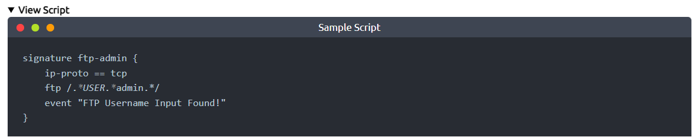
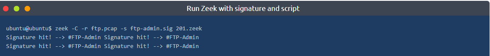
The above output shows that we successfully combined the signature and script. Zeek processed the signature and logs then the script controlled the outputs and provided a terminal output for each rule hit.
Scripts 202 | Load Local Scripts
Load all local scripts
We mentioned that Zeek has base scripts located in
"/opt/zeek/share/zeek/base". You can load all local scripts identified in your "local.zeek" file. Note that base scripts cover multiple framework functionalities. You can load all base scripts by easily running the local
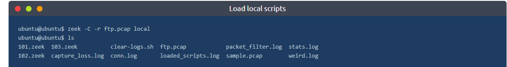
The above output demonstrates how to run all base scripts using the "local" command. Look at the above terminal output; Zeek provided additional log files this time. Loaded scripts generated loaded_scripts.log, capture_loss.log, notice.log, stats.log files. Note that, in our instance, 465 scripts loaded and used by using the "local" command. However, Zeek doesn't provide log files for the scripts doesn't have hits or results.
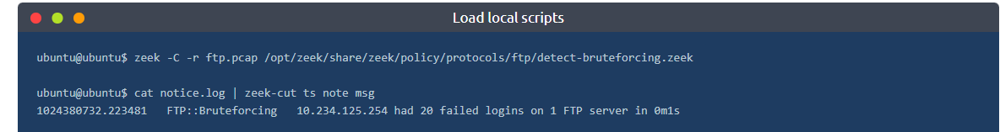
The above output shows how to load a specific script. This script provides much more information than the one we created. It provides one single line output and a connection summary for the suspicious incident. You can find and read more on the prebuilt scripts and frameworks by visiting Zeek's online book
here.
Zeek Signatures
Signatures:
Signatures need to run when zeek starts in order for zeek to look for a signature.
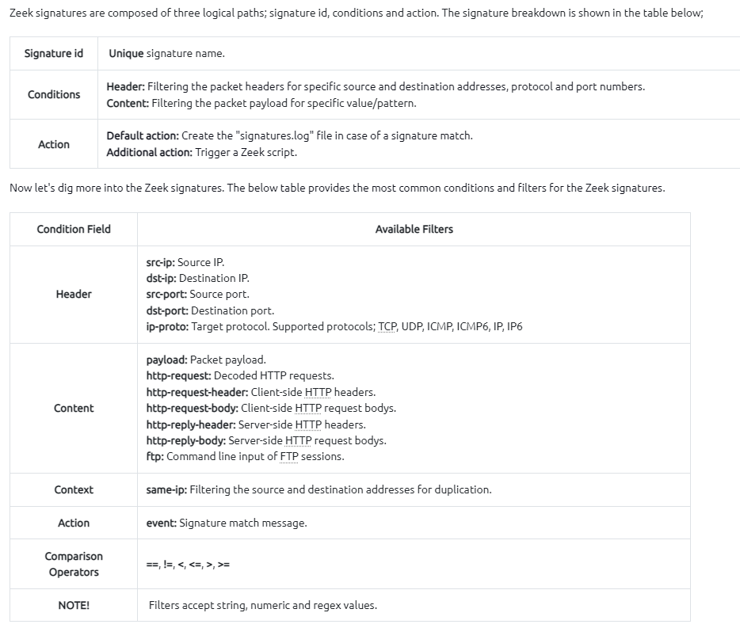
Sample Singature:
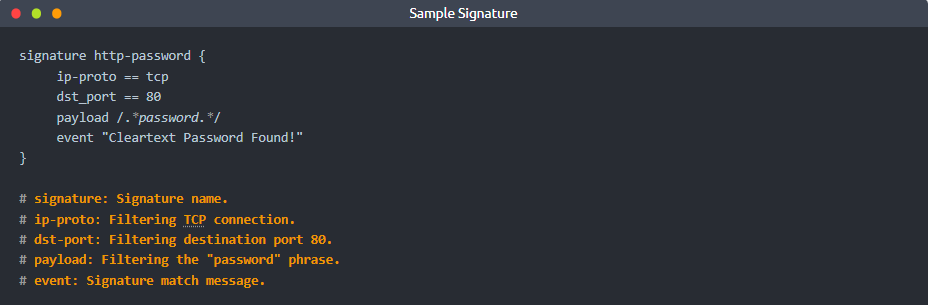
Zeek FrameWorks
W
e mentioned that Zeek highly relies on scripts, and the frameworks depend on scripts. Let's have a closer look at the file hash framework and see the script behind it.
You can read more on the intelligence framework
here and
here.
Scripts 203 | Load Frameworks
Zeek has 15+ frameworks that help analysts to discover the different events of interest. In this task, we will cover the common frameworks and functions.
You can find and read more on the prebuilt scripts and frameworks by visiting Zeek's online book here
.
File Framework | Hashes
Not all framework functionalities are intended to be used in CLI mode. The majority of them are used in scripting. You can easily see the usage of frameworks in scripts by calling a specific framework as
load @ $PATH/base/frameworks/framework-name
. Now, let's use a prebuilt function of the file framework and have MD5, SHA1 and SHA256 hashes of the detected files. We will call the "File Analysis" framework's "hash-all-files" script to accomplish this. Before loading the scripts, let's look at how it works.
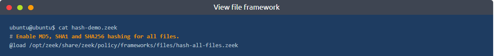
The above output shows how frameworks are loaded. In earlier tasks, we mentioned that Zeek highly relies on scripts, and the frameworks depend on scripts. Let's have a closer look at the file hash framework and see the script behind it.
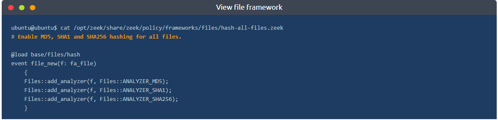
Now let's execute the script and investigate the log file.
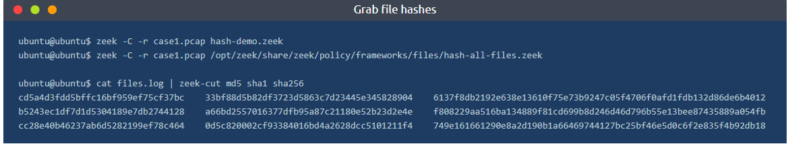
Look at the above terminal outputs. Both of the scripts provided the same result. Here the preference is up to the user. Both of the usage formats are true. Prebuilt frameworks are commonly used in scriptings with the "@load" method. Specific scripts are used as practical scripts for particular use cases.
File Framework | Extract Files
The file framework can extract the files transferred. Let's see this feature in action!
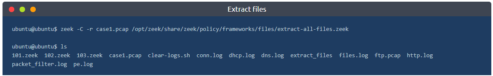
We successfully extracted files from the pcap. A new folder called "extract_files" is automatically created, and all detected files are located in it. First, we will list the contents of the folder, and then we will use the
file command to determine the file type of the extracted files.
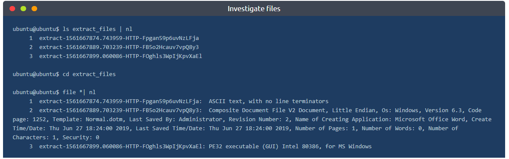
Zeek extracted three files. The "file" command shows us one .txt file, one .doc/.docx file and one .exe file. Zeek renames extracted files. The name format consists of four values that come from conn.log and files.log files; default "extract" keyword, timestamp value (ts), protocol (source), and connection id (conn_uids). Let's look at the files.log to understand possible anomalies better and verify the findings. Look at the below output; files.log provides the same results with additional details. Let's focus on the .exe and correlate this finding by searching its connection id (conn_uids).
The given terminal output shows us that there are three files extracted from the traffic capture. Let's look at the file.log and correlate the findings with the rest of the log files.
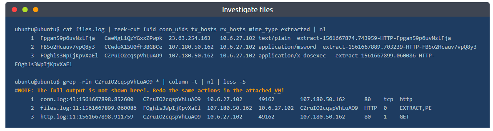
The "grep" tool helps us investigate the particular value across all available logs. The above terminal output shows us that the connection id linked with .exe appears in conn.log, files.log, and http.log files. Given example demonstrates how to filter some fields and correlate the findings with the rest of the logs. We've listed the source and destination addresses, file and connection id numbers,
MIME
types, and file names. Up to now, provided outputs and findings show us that record number three is a .exe file, and other log files provide additional information.
Notice Framework | Intelligence
The intelligence framework can work with data feeds to process and correlate events and identify anomalies. The intelligence framework requires a feed to match and create alerts from the network traffic. Let's demonstrate a single user-generated threat intel file and let Zeek use it as the primary intelligence source.
Intelligence source location:
/opt/zeek/intel/zeek_intel.txt
There are two critical points you should never forget. First, the source file has to be tab-delimited. Second, you can manually update the source and adding extra lines doesn't require any re-deployment. However, if you delete a line from the file, you will need to re-deploy the Zeek instance.
Let's add the suspicious URL gathered from the case1.pcap file as a source intel and see this feature in action! Before executing the script, let's look at the intelligence file and the script contents.
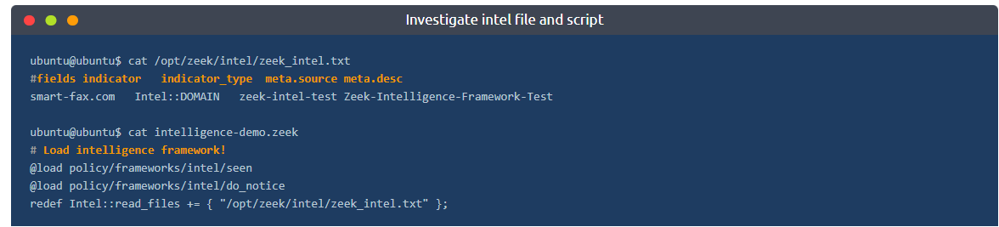
The above output shows the contents of the intel file and script contents. There is one intelligence input, and it is focused on a domain name, so when this domain name appears in the network traffic, Zeek will create the "intel.log" file and provide the available details.
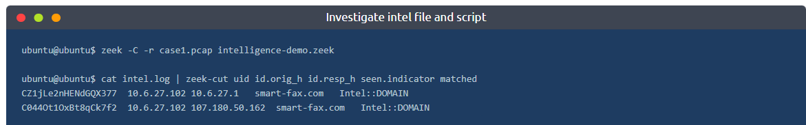
The above output shows that Zeek detected the listed domain and created the intel.log file. This is one of the easiest ways of using the intelligence framework.
Zeek Packacges
Scripts 204 | Package Manager
Zeek Package Manager helps users install third-party scripts and plugins to extend Zeek functionalities with ease. The package manager is installed with Zeek and available with the
zkg
command. Users can install, load, remove, update and create packages with the "zkg" tool. You can read more on and view available packages
here
and
here
. Please note that you need root privileges to use the "zkg" tool.
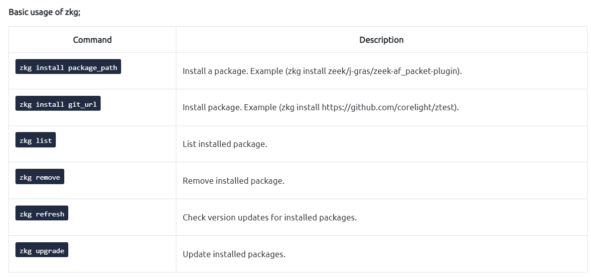
There are multiple ways of using packages. The first approach is using them as frameworks and calling specific package path/directory per usage. The second and most common approach is calling packages from a script with the "@load" method. The third and final approach to using packages is calling their package names; note that this method works only for packages installed with the "zkg" install method.
Packages |
Cleartext Submission of Password
Let's install a package first and then demonstrate the usage in different approaches.
Note:
The package is installed in the given VM.
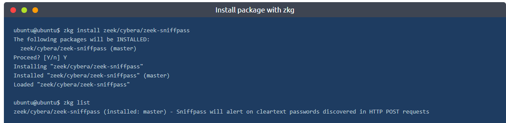
The above output shows how to install and list the installed packages. Now we successfully installed a package. As the description mentions on the above terminal, this package creates alerts for cleartext passwords found in
HTTP
traffic. Let's use this package in three different ways!
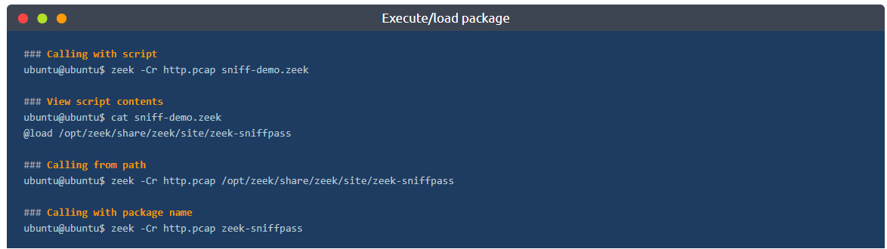
The above output demonstrates how to execute/load packages against a pcap. You can use the best one for your case. The "zeek-sniffpass" package provides additional information in the notice.log file. Now let's review the logs and discover the obtained data using the specific package.
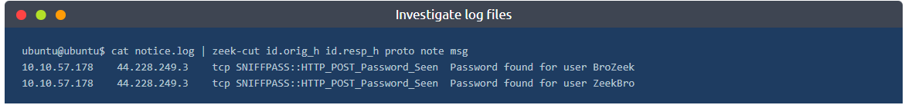
The above output shows that the package found cleartext password submissions, provided notice, and grabbed the usernames. Remember, in
TASK-5 we created a signature to do the same action. Now we can do the same activity without using a signature file. This is a simple demonstration of the benefit and flexibility of the Zeek scripts.
Packages |
Geolocation Data
Let's use another helpful package called "geoip-conn". This package provides geolocation information for the IP addresses in the conn.log file. It depends on "GeoLite2-City.mmdb" database created by MaxMind. This package provides location information for only matched IP addresses from the internal database.
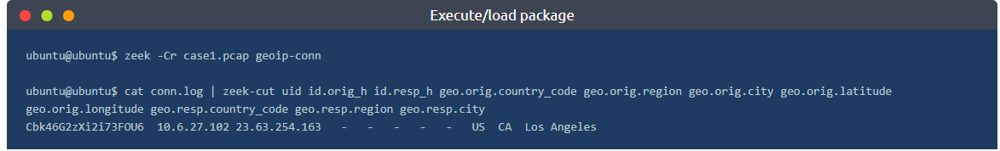
Up to now, we've covered what the Zeek packages are and how to use them. There are much more packages and scripts available for Zeek in the wild. You can try ready or third party packages and scripts or learn Zeek scripting language and create new ones.